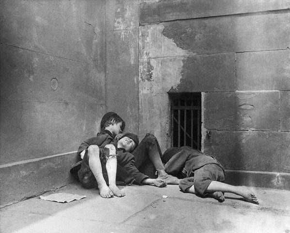
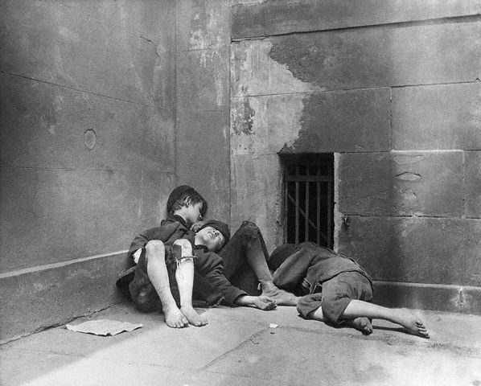

Jacob Riis used photojournalism to provide a voice for the voiceless. He told people living in slum’s stories and exposed the chronic exploitation they experienced. His work helped lead to Water purification projects and anti-child labour laws.
Quotes
“When nothing seems to help, I go and look at a stonecutter hammering away at his rock, perhaps a hundred times without as much as a crack showing in it. Yet at the hundred and first blow it will split in two, and I know it was not that last blow that did it, but all that had gone before.”“Long ago it was said that "one half of the world does not know how the other half lives." That was true then. It did not know because it did not care. The half that was on top cared little for the struggles, and less for the fate of those who were underneath, so long as it was able to hold them there and keep its own seat. There came a time when the discomfort and consequent upheavals so violent, that it was no longer an easy thing to do, and then the upper half fell to inquiring what was the matter. Information on the subject has been accumulating rapidly since, and the whole world has had its hands full answering for its old ignorance.”
 
